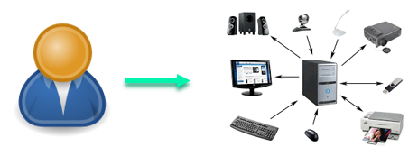
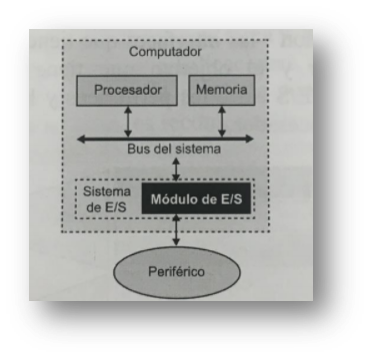
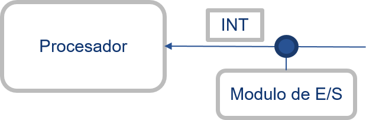
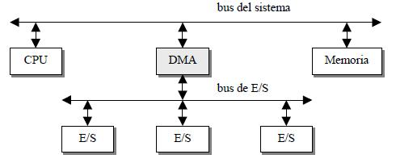

Manejo de Entradas y SalidasLos medios de comunicación entre el usuario y el computador es atreves de los periféricos, estos a su vez esta conectados a modulos de entrada y salidas que tiene componentes de hardware y software Los cuales facilitan las operaciones entre los periféricos, memoria y registros del procesador.


Diagrama de Modulos E/S Modulos E/S programadosLas entradas y salidas programadas, consiste en que el procesador ejecute un programa en el cual este haciendo una consulta a los modulos de entra y salida para dectectar un cambio en sus registros Este programa con lleva una ejecución de operaciones como lo son la transferencia de datos que consiste en la sincronización, que es la espera del procesador a cualquier cambio frente a la entrada y salida. El intercambio de datos lo administra el procesador ya se una operación de lectura almacenando la información en la memoria o extrayéndola de esta y enviándola a el periférico, la gran desventaja es que el procesador no puede realizar otra tarea mas mientras realiza esta espera. Transferencia de datosSincronización: El programa ejecutado espera un cambio, en las E/S, hace una consulta en el registro del modulo E/S. El procesador de dedica todo sus recursos en esta tarea Intercambio De Datos: En una operación de lectura el procesador lee el registro del Modulo de E/S y lo almacena en la memoria, y en una operación de salida extrae el dato de la memoria y lo envía al periférico indicado. Modulo de E/S interrumpidasLas interrupciones es una manera mas ágil de tratar las operaciones que con lleva la espera de una actividad en el modulo de entrada y salida, además que alivia la carga al procesador para que este pueda realizar operaciones adicionales.

Diagrama de interrupciones
El programa genera una orden de E/S y después continua ejecutándose hasta que el hardware lo
interrumpa en para indicar
que la operación ha concluido. Aun se requiere la intervención del procesador para transferir datos pero puede esperar a que finalice mientras realiza otras operaciones. E/S Acceso Directo a Memoria (DMA)Por medio de otro procesador podemos retirar la tarea al procesador de la transferencia de datos y de la espera activa para que este pueda realizar otro tipo de tareas, el modulo DMA utiliza el bus del sistema cuando el procesador no lo necesita y se encarga de la transferencia de los datos y de la sincronización

Canales y procesadores E/SLos canales de entrada y salida son una ampliación del DMA, el cual ejecuta instrucciones de entrada y salida, el canal selectos maneja entradas y salidas en un instante a un dispositivo, a diferencia del canal multiplexor que maneja entradas y salidas de varios dispositivos al mismo tiempo |